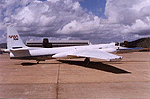

P.I.(s): Robert O. Green -- NASA/Jet Propulsion Laboratory
Objectives: Spectral and radiometric calibration of radiance-measuring sensors and for quantitative comparison of data acquired from different sites, times and instruments to meet calibration and validation requirements for AVIRIS during the BOREAS experiment. Ground based surface and atmospheric measurements with rigorously calibrated field instruments will be acquired simultaneously with the AVIRIS overflights. With assessments of surface and atmospheric characteristic derived from these ground based measurements a radiative transfer code will be used to predict the total radiance incident at AVIRIS. Analysis using this predicted radiance and the AVIRIS reported radiance will allow validation and calibration of the in-flight spectral and radiometric properties of AVIRIS. Rigorous error analysis of the field measurements, derived parameters, radiative transfer models and sensor characteristics will be implemented to constrain fully the results of this experiment.
Go to the AVIRIS/BOREAS WWW site at NASA/JPL.
 The NASA ER-2 carrying AVIRIS
Objectives:
A spectral and radiometric calibration of radiance-measuring sensors such as AVIRIS is required for physically based analysis of the measured data and for quantitative comparison of data acquired from different sites, times and instruments. The data measured in this experiment support this calibration and validation requirement for AVIRIS during the BOREAS experiment. Ground based surface and atmospheric measurements with calibrated field instruments were acquired simultaneously with the AVIRIS overflights.
Data Collected:
DATA SET 1: AVIRIS IMAGE DATA (400 to 2500 nm)
940419 BOREAS Southern Study Area
940420 BOREAS Northern Study Area
940428 BOREAS Northern Study Area
940608 BOREAS Northern Study Area
940721 BOREAS Southern Study Area
940804 BOREAS Northern Study Area
940808 BOREAS Northern Study Area
940916 BOREAS Southern Study Area
940917 BOREAS Northern Study Area
WWW Quicklook Image Site
http://ophelia.jpl.nasa.gov/README.htm
DATA SET 2: FIELD SPECTROMETER SPECTRA (400 to 2500 nm)
940608 100 Spectra of AVIRIS Calibration Site
940611 300 Spectra of AVIRIS Calibration Site
940721 200 Spectra of AVIRIS Calibration Site
940723 200 Spectra of AVIRIS Calibration Site
940724 80 Spectra of AVIRIS Calibration Site
940802 200 Spectra of AVIRIS Calibration Site
940807 105 Spectra of AVIRIS Calibration Site
940808 194 Spectra of AVIRIS Calibration Site
940916 140 Spectra of AVIRIS Calibration Site
940601 30 Spectra of AVIRIS Calibration Site
Aspen 10
Jackpine Bark 10
Jackpine Needles 10
Healthy Grass 10
Shallow Water 10
Tarps 10
Wet Soil 10
Spruce 10
DATA SET 3: SUNPHOTOMETER DATA (Aerosols, Water Vapor)
940529A AVIRIS Calibration Site
940529C Old Jack Pine Site
940531A AVIRIS Calibration Site
940531B Old Jack Pine Site
940531C Old Jack Pine Site
940601A AVIRIS Calibration Site
940601B Old Jack Pine Site
940601C Old Jack Pine Site
940604B Old Jack Pine Site
940604C Old Jack Pine Site
940606B Old Black Spruce Site
940606C Old Black Spruce Site
940611A AVIRIS Calibration Site
940611B Old Aspen Site
940912B Old Black Spruce Site
940912C Old Black Spruce Site
940913A AVIRIS Calibration Site
940913B Old Black Spruce Site
940913C Old Black Spruce Site
940915A AVIRIS Calibration Site
940915B AVIRIS Calibration Site
940915C AVIRIS Calibration Site
940916A AVIRIS Calibration Site
940916B Old Black Spruce Site
940916C Old Black Spruce Site
940917A AVIRIS Calibration Site
940917B Old Aspen Site
RSS Overview || RSS-1 | RSS-2 | RSS-3 | RSS-4 | RSS-5 | RSS-6 | RSS-7 | RSS-8 | RSS-9 | RSS-10
RSS-11 | RSS-12 | RSS-13 | RSS-14 | RSS-15 | RSS-16 | RSS-17 | RSS-18 | RSS-19 | RSS-20
 Send a data request to the BOREAS Data Manager (BOREAS Investigators only)
Send a data request to the BOREAS Data Manager (BOREAS Investigators only)
E-Mail a comment on this page to the curator 
Send e-mail to Jaime Nickeson, the BORIS representative for the RSS group
Return to the RSS Overview
Return to the BOREAS Science Groups Overview
Return to the BOREAS Home Page
Last Updated: October 28, 1997
{kind=link}